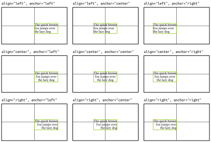
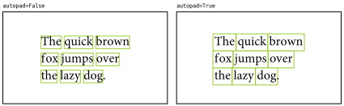

Module eyekit.text
Defines the TextBlock and InterestArea objects for handling texts.
Classes
class Box-
Representation of a bounding box, which provides an underlying framework for
Character,InterestArea, andTextBlock.Subclasses
Instance variables
var x :Â float-
X-coordinate of the center of the bounding box
var y :Â float-
Y-coordinate of the center of the bounding box
var x_tl :Â float-
X-coordinate of the top-left corner of the bounding box
var y_tl :Â float-
Y-coordinate of the top-left corner of the bounding box
var x_br :Â float-
X-coordinate of the bottom-right corner of the bounding box
var y_br :Â float-
Y-coordinate of the bottom-right corner of the bounding box
var width :Â float-
Width of the bounding box
var height :Â float-
Height of the bounding box
var box :Â tuple-
The bounding box represented as x_tl, y_tl, width, and height
var center :Â tuple-
XY-coordinates of the center of the bounding box
class Character (char, x_tl, y_tl, x_br, y_br, baseline, log_pos)-
Representation of a single character of text. A
Characterobject is essentially a one-letter string that occupies a position in space and has a bounding box. It is not usually necessary to createCharacterobjects manually; they are created automatically during the instantiation of aTextBlock.Ancestors
Instance variables
var baseline :Â float-
The y position of the character baseline
var midline :Â float-
The y position of the character midline
Methods
def serialize(self) ‑> list
Inherited members
class InterestArea (chars, location, padding, right_to_left, id=None)-
Representation of an interest area – a portion of a
TextBlockobject that is of potential interest. It is not usually necessary to createInterestAreaobjects manually; they are created automatically when you extract areas of interest from aTextBlock.Ancestors
Instance variables
var location :Â tuple-
Location of the interest area in its parent TextBlock (row, start, end)
var id :Â str-
Interest area ID. By default, these ID's have the form 1:5:10, which represents the line number and column indices of the
InterestAreain its parentTextBlock. However, IDs can also be changed to any arbitrary string. var right_to_left :Â bool-
Trueif interest area represents right-to-left text var text :Â str-
String representation of the interest area
var display_text :Â str-
Same as
textexcept right-to-left text is output in display form var baseline :Â float-
The y position of the text baseline
var midline :Â float-
The y position of the text midline
var onset :Â float-
The x position of the onset of the interest area. The onset is the left edge of the interest area text without any bounding box padding (or the right edge in the case of right-to-left text).
var padding :Â tuple-
Bounding box padding on the top, bottom, left, and right edges
Methods
def set_padding(self, *, top: float = None, bottom: float = None, left: float = None, right: float = None)-
Set the amount of bounding box padding on the top, bottom, left and/or right edges.
def adjust_padding(self, *, top: float = None, bottom: float = None, left: float = None, right: float = None)-
Adjust the current amount of bounding box padding on the top, bottom, left, and/or right edges. Positive values increase the padding, and negative values decrease the padding.
def is_left_of(self, fixation) ‑> bool-
Returns True if the interest area is to the left of the fixation.
def is_right_of(self, fixation) ‑> bool-
Returns True if the interest area is to the right of the fixation.
def is_before(self, fixation) ‑> bool-
Returns True if the interest area is before the fixation. An interest area comes before a fixation if it is to the left of that fixation (or to the right in the case of right-to-left text).
def is_after(self, fixation) ‑> bool-
Returns True if the interest area is after the fixation. An interest area comes after a fixation if it is to the right of that fixation (or to the left in the case of right-to-left text).
def serialize(self) ‑> dict-
Returns the
InterestArea's initialization arguments as a dictionary for serialization.
Inherited members
class TextBlock (text: list, *, position: tuple = None, font_face: str = None, font_size: float = None, line_height: float = None, align: str = None, anchor: str = None, right_to_left: bool = None, alphabet: str = None, autopad: bool = None)-
Representation of a piece of text, which may be a word, sentence, or entire multiline passage.
Initialized with:
-
textThe line of text (string) or lines of text (list of strings). Optionally, these can be marked up with arbitrary interest areas; for example,The quick brown fox jump[ed]{past-suffix} over the lazy dog. -
positionXY-coordinates describing the position of the TextBlock on the screen. The x-coordinate should be either the left edge, right edge, or center point of the TextBlock, depending on how theanchorargument has been set (see below). The y-coordinate should always correspond to the baseline of the first (or only) line of text. -
font_faceName of a font available on your system. The keywordsitalicand/orboldcan also be included to select the desired style, e.g.,Minion Pro bold italic. -
font_sizeFont size in pixels. At 72dpi, this is equivalent to the font size in points. To convert a font size from some other dpi, usefont_size_at_72dpi(). -
line_heightDistance between lines of text in pixels. In general, for single line spacing, the line height is equal to the font size; for double line spacing, the line height is equal to 2 × the font size, etc. By default, the line height is assumed to be the same as the font size (single line spacing). Ifautopadis set toTrue(see below), the line height also effectively determines the height of the bounding boxes around interest areas. -
alignAlignment of the text within the TextBlock. Must be set toleft,center, orright, and defaults toleft(unlessright_to_leftis set toTrue, in which casealigndefaults toright). -
anchorAnchor point of the TextBlock. This determines the interpretation of thepositionargument (see above). Must be set toleft,center, orright, and defaults to the same as thealignargument. For example, ifpositionwas set to the center of the screen, thealignandanchorarguments would have the following effects:  -
right_to_leftSet toTrueif the text is in a right-to-left script (Arabic, Hebrew, Urdu, etc.). If you are working with the Arabic script, you should reshape the text prior to passing it into Eyekit by using, for example, the Arabic-reshaper package. -
alphabetA string of characters that are to be considered alphabetical, which determines what counts as a word. By default, this includes any character defined as a letter or number in unicode, plus the underscore character. However, if you need to modify Eyekit's default behavior, you can set a specific alphabet here. For example, if you wanted to treat apostrophes and hyphens as alphabetical, you might usealphabet="A-Za-z'-". This would allow a sentence like "Where's the orang-utan?" to be treated as three words rather than five. -
autopadIfTrue(the default), padding is automatically added toInterestAreabounding boxes to avoid horizontal gaps between words and vertical gaps between lines. Horizontal padding (half of the width of a space character) is added to the left and right edges, unless the character to the left or right of the interest area is alphabetical (e.g. if the interest area is word-internal). Vertical padding is added to the top and bottom edges, such that bounding box heights will be equal to theline_height(see above). 
Ancestors
Static methods
def defaults(*, position: tuple = None, font_face: str = None, font_size: float = None, line_height: float = None, align: str = None, anchor: str = None, right_to_left: bool = None, alphabet: str = None, autopad: bool = None)-
Set default
TextBlockparameters. If you plan to create severalTextBlocks with the same parameters, it may be useful to set the default parameters at the top of your script or at the start of your session:import eyekit eyekit.TextBlock.defaults(font_face='Helvetica') txt = eyekit.TextBlock('The quick brown fox') print(txt.font_face) # 'Helvetica'
Instance variables
var text :Â list-
Original input text
var position :Â tuple-
Position of the
TextBlock var font_face :Â str-
Name of the font
var font_size :Â float-
Font size in points
var line_height :Â float-
Line height in points
var align :Â str-
Alignment of the text (either
left,center, orright) var anchor :Â str-
Anchor point of the text (either
left,center, orright) var right_to_left :Â bool-
Right-to-left text
var alphabet :Â str-
Characters that are considered alphabetical
var autopad :Â bool-
Whether or not automatic padding is switched on
var n_rows :Â int-
Number of rows in the text (i.e. the number of lines)
var n_cols :Â int-
Number of columns in the text (i.e. the number of characters in the widest line)
var n_lines :Â int-
Number of lines in the text (i.e. alias of
n_rows) var baselines :Â list-
Y-coordinate of the baseline of each line of text
var midlines :Â list-
Y-coordinate of the midline of each line of text
Methods
def interest_areas(self)-
Iterate over each interest area that was manually marked up in the raw text. To mark up an interest area, use brackets to mark the area itself followed immediately by braces to provide an ID (e.g.,
TextBlock("The quick [brown]{word_id} fox.")). def lines(self)-
Iterate over each line as an
InterestArea. def words(self, pattern: str = None, *, line_n: int = None, alphabetical_only: bool = True)-
Iterate over each word as an
InterestArea. Optionally, you can supply a regex pattern to pick out specific words. For example,'(?i)the'gives you case-insensitive occurrences of the word the or'[a-z]+ing'gives you lower-case words ending with -ing.line_nlimits the iteration to a specific line number. Ifalphabetical_onlyis set toTrue, a word is defined as a string of consecutive alphabetical characters (as defined by the TextBlock'salphabetproperty); ifFalse, a word is defined as a string of consecutive non-whitespace characters. def characters(self, *, line_n: int = None, alphabetical_only: bool = True)-
Iterate over each character as an
InterestArea.line_nlimits the iteration to a specific line number. Ifalphabetical_onlyis set toTrue, the iterator will only yield alphabetical characters (as defined by the TextBlock'salphabetproperty). def ngrams(self, ngram_width: int, *, line_n: int = None, alphabetical_only: bool = True)-
Iterate over each ngram, for given n, as an
InterestArea.line_nlimits the iteration to a specific line number. Ifalphabetical_onlyis set toTrue, an ngram is defined as a string of consecutive alphabetical characters (as defined by the TextBlock'salphabetproperty) of lengthngram_width. def zones(self)-
Deprecated in 0.4.1. Use
TextBlock.interest_areas()instead. def which_line(self, fixation) ‑> InterestArea-
Deprecated in 0.6.
def which_word(self, fixation, pattern: str = None, *, line_n: int = None, alphabetical_only: bool = True) ‑> InterestArea-
Deprecated in 0.6.
def which_character(self, fixation, *, line_n: int = None, alphabetical_only: bool = True) ‑> InterestArea-
Deprecated in 0.6.
def serialize(self) ‑> dict-
Returns the
TextBlock's initialization arguments as a dictionary for serialization.
Inherited members
-